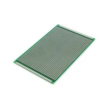

PCB Макетная плата для пайки двусторонняя 8x12см
Платы прототипированияКатегория
Платы прототипирования
Тип
двусторонняя макетная плата для пайки
Размер
80×120 мм
Толщина
1,5 мм
Шаг контактных площадок
2,54 мм
Количество контактов
не указано в источнике
Цвет
зависит от исполнения (зелёный/чёрный/красный/белый)
Кратко
Двусторонняя макетная печатная плата для пайки формата 80×120 мм. Подходит для быстрого монтажа и отладки небольших схем без изготовления полноценной платы.
Описание
Это универсальная перфорированная/макетная плата для ручной пайки электронных компонентов. Формат 8×12 см обычно используют для прототипирования, переноса макета с breadboard и сборки небольших устройств. Двустороннее исполнение упрощает разводку и соединение элементов с обеих сторон платы. Шаг контактных площадок стандартный 2,54 мм, поэтому плата совместима с большинством выводных компонентов, разъёмов и модулей. Обычно такие платы берут для учебных проектов, самоделок и быстрого ремонта.
Документация
id hw-2026-006